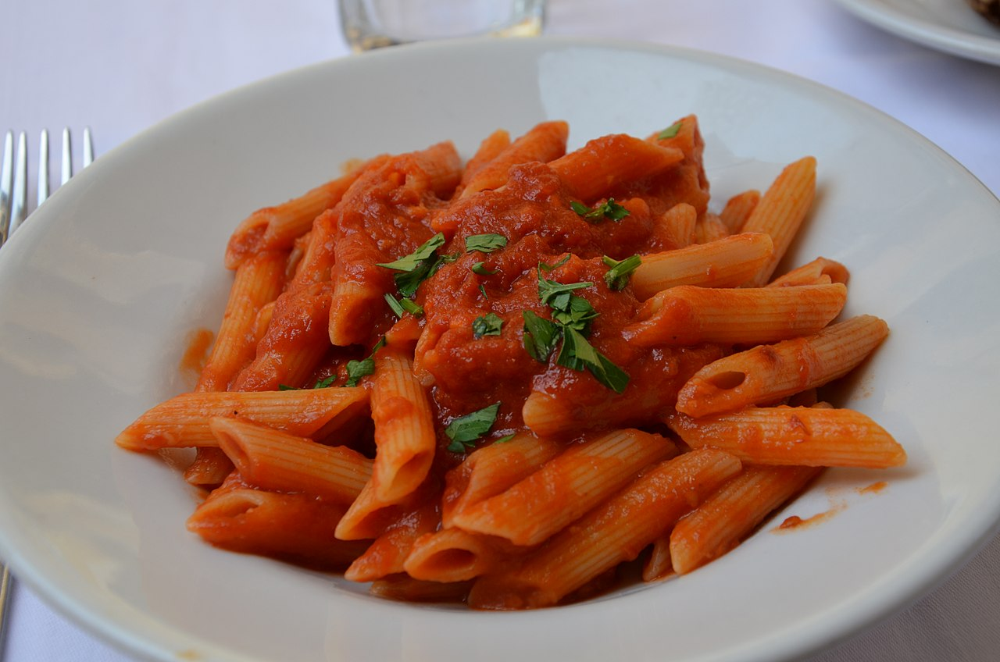

Pasta All'Arrabbiata

Are you nervous? Need to cool nerves down? Then this is NOT the dish for you!
In fact, penne all'arrabbiata owes its name from the italian word (arrabbiata) which means 'angry'.
Wondering why? Let's see if you can find it out from its recipe, let's go!
Ingredients
(for 4 servings)
- 6 tbsp virgin olive oil
- 2 medium hot chillies, sliced
- 2 garlic cloves, chopped
- basil, to taste
- 600g canned tomatoe (or chopped fresh one)
- salt, to taste
- 400g penne pasta
- parmesan cheese
Instructions
- Heat olive oil in frying pan; add chilli and garlic and, after 1 minute, the basil; let them flavour the oil
- Remove the content from the pan and set aside; add the chopped tomatoes to the frying pan
- Put garlic, basil, and chilli back in the pan with the tomatoes. Simmer for about 10 minutes, add salt to taste
- In the meantime cook the pasta for few minutes in a large saucepan of boiling water; dreain the pasta
and add the tomatoe sauce to it. Serve with parmesan cheese.
Enjoy your Pasta All'Arrabbiata!